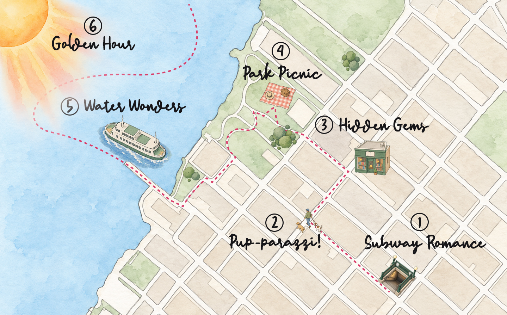

Gameplay
Real life set the pace.
Twenty-four quests were open from the start, with no prescribed route or pace. People could choose what fit that day, bring whoever happened to be around, or fold several quests into an outing already happening. The finale was the one exception: it stayed locked behind a secret code and was saved for the birthday gathering as a shared moment of discovery.
The Adventure Board became home base, giving people enough structure to see what was possible and choose what came next without dictating the path.
I gave up control over the path so the game could fit around real life.
